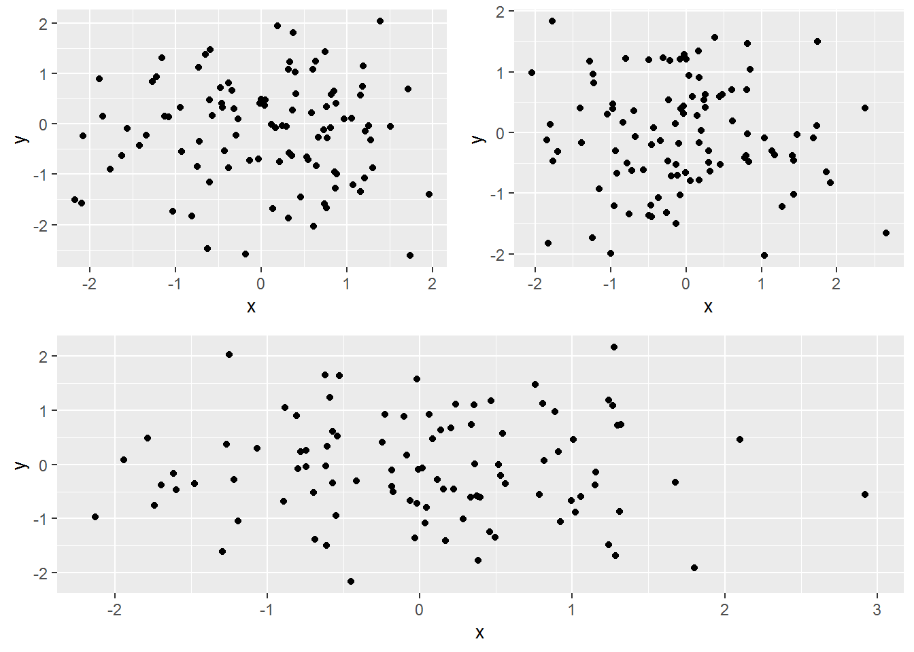

R tips
0.7 Testing character(0) in if statement
v <- character(0)
identical(v, character(0)) # returns TRUE
identical(v, "") # returns FALSE
identical(v, numeric(0)) # returns also FALSESource: https://stackoverflow.com/questions/25640161/r-how-to-test-for-character0-in-if-statement
0.8 Removing/keeping objects
Q: How to remove all objects but some from the workspace in R?
A:
rm(list=ls()[! ls() %in% c("a","b")])0.9 Creating frequency table
library(tidyverse)
df_ <- data.frame(x = sample(letters[1:5], 100, replace = TRUE),
y = sample(LETTERS[1:5], 100, replace = TRUE),
stringsAsFactors = FALSE)
# method 1
tab1 <- table(df_$x, df_$y)
the_df_1 <-
as.data.frame.matrix(tab1) %>%
add_column(x = row.names(tab1), .before = 1)
row.names(the_df_1) <- NULL
(the_df_1)## x A B C D E
## 1 a 1 5 5 1 1
## 2 b 3 2 7 4 1
## 3 c 4 6 4 10 5
## 4 d 6 4 8 6 4
## 5 e 5 2 3 2 1# method 2
the_df_2 <-
df_ %>%
count(x, y) %>%
pivot_wider(id_cols = x,
names_from = y,
values_from = n) # %>%
# mutate(across(everything(), .fns = ~replace_na(.,0)))
(the_df_2)## # A tibble: 5 x 6
## x A B C D E
## <chr> <int> <int> <int> <int> <int>
## 1 a 1 5 5 1 1
## 2 b 3 2 7 4 1
## 3 c 4 6 4 10 5
## 4 d 6 4 8 6 4
## 5 e 5 2 3 2 10.10 Programming with dplyr
library(dplyr)
cols <- c("am","gear")
grouping_vars <- rlang::syms(cols)
my_df <-
mtcars %>%
group_by(!!!grouping_vars) %>%
summarise(mean_cyl=mean(cyl))0.11 Grouped grand summary
library(tidyverse)
# > as.integer(Sys.Date())
# [1] 18290
set.seed(18290)
fk_data <-
tibble(x = sample(letters[1:4], 12, replace = TRUE),
y = rnorm(12),
z = runif(12),
w = rchisq(12, df = 5))
# method 1
the_summary_a <-
fk_data %>%
group_by(x) %>%
group_modify(function(x, ...) map_dfr(x, sum)) %>%
ungroup()
# method 2
the_summary_b <-
fk_data %>%
group_by(x) %>%
summarise_all(.funs = sum)
(list(the_summary_a, the_summary_b))
identical(the_summary_a, the_summary_b)0.12 Add an extra column
Q: How to add a column to a dataframe?
A:
library(tibble) # for add_column
library(dplyr)
df <-
data.frame(a = 1:5, b = 2:6, c = 3:7) %>%
add_column(d = 4:8, .after = 2)0.13 Add an extra row
library(tibble) # for add_row
df_a <- data.frame(x = letters[8:10], y = 1:3)
(df_b <- add_row(df_a, x = "x", y = 10, .before = 1))## x y
## 1 x 10
## 2 h 1
## 3 i 2
## 4 j 30.14 Arrangin rows in custom order
library(dplyr)
fk_data <-
data.frame(x = sample(LETTERS[1:6], 20, replace = TRUE),
y = rnorm(20))
my_order <- c("A", "F", "B", "E", "C", "D")
ordered_df <-
fk_data %>%
arrange(match(x, my_order), desc(y))
ordered_df## x y
## 1 A 0.83043656
## 2 A -0.74212663
## 3 A -1.63047396
## 4 F 0.02486246
## 5 F -0.50336352
## 6 F -0.52132986
## 7 F -1.54674212
## 8 F -1.82954832
## 9 B 0.89086845
## 10 E 1.58199889
## 11 E 1.14426531
## 12 E 0.12647595
## 13 E -0.05159914
## 14 E -0.25562734
## 15 E -1.15660475
## 16 C 0.22078248
## 17 D -0.30403839
## 18 D -0.69250429
## 19 D -0.86612303
## 20 D -1.47527822Source: https://stackoverflow.com/questions/46129322/arranging-rows-in-custom-order-using-dplyr/46129338
0.15 De-duplicate a dataframe
library(dplyr)
a_df <-
data.frame(x = rep(letters[1:3], each = 2),
y = rep(letters[2:4], each = 2),
z = rep(1:2, each = 3))
(a_df)## x y z
## 1 a b 1
## 2 a b 1
## 3 b c 1
## 4 b c 2
## 5 c d 2
## 6 c d 2b_df <-
a_df %>%
distinct()
(b_df)## x y z
## 1 a b 1
## 2 b c 1
## 3 b c 2
## 4 c d 2c_df <-
a_df %>%
distinct(x, y, .keep_all = TRUE)
(c_df)## x y z
## 1 a b 1
## 2 b c 1
## 3 c d 20.16 Anti- and semi-join
library(dplyr)
a_df <-
data.frame(x = rep(letters[1:3], each = 2),
y = rep(letters[2:4], each = 2),
z = rep(1:2, each = 3))
(a_df)## x y z
## 1 a b 1
## 2 a b 1
## 3 b c 1
## 4 b c 2
## 5 c d 2
## 6 c d 2c_df <-
a_df %>%
distinct(x, y, .keep_all = TRUE)
(c_df)## x y z
## 1 a b 1
## 2 b c 1
## 3 c d 2d_df <- semi_join(a_df, c_df)
(d_df)## x y z
## 1 a b 1
## 2 a b 1
## 3 b c 1
## 4 c d 2
## 5 c d 2e_df <- anti_join(a_df, c_df)
(e_df)## x y z
## 1 b c 20.17 Simple recoding
library(dplyr)
x <- letters[1:5]
y <- recode(x, a = "apple")
z <- recode(x, b = "banana")
c(y, z)## [1] "apple" "b" "c" "d" "e" "a" "banana" "c"
## [9] "d" "e"0.18 Use grepl() to filter
library(dplyr)
df_1 <-
data.frame(x = c("x-18", sample(letters[1:3], 3), "a-18", "b-18"), y = rnorm(6))
# get the rows where x contains '-'
(df_2 <- filter(df_1, grepl("-", x)))## x y
## 1 x-18 1.1118300
## 2 a-18 -0.2633088
## 3 b-18 -0.39578670.19 Use cut()
code_tempreture <- function(x)
{the_interval <- cut(x, breaks = c(-Inf, 0, 10, 20, 30, +Inf),
labels = c('freezing', 'cold', 'cool', 'warm', 'hot'))
as.vector(the_interval)
}
x <- runif(10, -10, 40)
(test_re <- code_tempreture(x))## [1] "cool" "cool" "cool" "warm" "cold" "cool" "warm" "cold" "warm" "cold"0.21 Find if a tibble is grouped
is_grouped_df()
Reference: https://stackoverflow.com/questions/42655746/determine-if-a-tibble-is-grouped-or-not
0.23 Subset a dataframe by NA
Q: How to get the rows which have NA’s in a dataframe?
A: new_DF <- DF[rowSums(is.na(DF)) > 0, ]
0.25 Convert blank to NA
library(dplyr)
fake_df <-
data.frame(x = c(1:2, "", 3, 4, ""),
y = c("a", "b", "c", "", "", "d"),
z = c(rep(TRUE, 4), "", ""))
(fake_df)## x y z
## 1 1 a TRUE
## 2 2 b TRUE
## 3 c TRUE
## 4 3 TRUE
## 5 4
## 6 dconverted_fake_df <-
fake_df %>%
mutate_all(na_if, "")
(converted_fake_df)## x y z
## 1 1 a TRUE
## 2 2 b TRUE
## 3 <NA> c TRUE
## 4 3 <NA> TRUE
## 5 4 <NA> <NA>
## 6 <NA> d <NA>Source: https://stackoverflow.com/questions/24172111/change-the-blank-cells-to-na
0.26 Label y axis in ggplot2
Q: How to label y axis with percent/dollar/comma sign?
A:
p <- ggplot(df, aes(x, y)) + geom_point()
p + scale_y_continuous(labels = scales::percent)
p + scale_y_continuous(labels = scales::dollar)
p + scale_y_continuous(labels = scales::comma)0.27 Set plot margins in ggplot2
library(ggplot2)
my_df <- data.frame(x = 1:10, y = 1:10)
ggplot(my_df, aes(x, y)) +
geom_point() +
theme(plot.margin = unit(c(1, 2, 4, 6), "cm")) # top, right, bottom and left0.28 Set plot margins in base R
# sets the bottom, left, top and right margins respectively of
# the plot region in number of lines of text
par(mar = c(10, 8, 4, 2))
plot(1:10, 1:10, xlab = "x", ylab = "y")0.29 Deal with long labels in ggplot2
Source: https://stackoverflow.com/questions/41568411/how-to-maintain-size-of-ggplot-with-long-labels
0.30 Edit plotly object
library(ggplot2)
library(plotly)
df <- data.frame(x = c(1, 2, 3, 4),
y = c(1, 5, 3, 5),
group = c('A', 'A', 'B', 'B'))
g <-
ggplot(data=df, aes(x = x, y = y, colour = group)) +
geom_point(size = 4) +
geom_hline(yintercept = 2) +
scale_color_manual(values=c("red", "blue")) +
theme(plot.margin = unit(c(0.5, 0.5, 0.5, 0.5), "cm"))
p <- plotly_build(g) %>% config(displayModeBar = FALSE)
# to have a look at object p
# str(p)
# modify the text from "~yintercept: 2" to "y-intercept = 2"
p$x$data[[3]]$text <- "y-intercept = 2"
p0.31 Zoom in on a barchart
library(ggplot2)
library(gridExtra)
the_data <- data.frame(x = LETTERS[1:3], y = c(200, 300, 150))
# original
p1 <-
ggplot(the_data, aes(x = x, weight = y)) +
geom_bar(width = 0.5, fill = "blue") +
labs(x = "")
# zoomed
p2 <-
p1 + coord_cartesian(ylim = c(100, 300))
# horizontal bars; zoomed
p3 <-
p1 + coord_flip(ylim = c(100, 300))
p4 <- ggplot()
# put tem together
grid.arrange(p1, p2, p3, p4, newpage = TRUE,
layout_matrix = matrix(1:4, byrow = TRUE, 2, 2))0.32 gridExtra and patchwork packages
library(ggplot2)
library(gridExtra)
# library(patchwork)
r <- function() data.frame(x = rnorm(100), y = rnorm(100))
p <- function() ggplot(data = r(), aes(x, y)) + geom_point()
# (p() | p()) / p()
g1 <- arrangeGrob(grobs = list(p(), p()), layout_matrix = matrix(1:2, ncol = 2, byrow = TRUE))
g2 <- arrangeGrob(grobs = list(p()), nrow = 1, ncol = 1)
grid.arrange(g1, g2, nrow = 2)
Source:
https://cran.r-project.org/web/packages/gridExtra/vignettes/arrangeGrob.html
0.33 Use forcats::fct_reorder()
We can use forcats::fct_reorder() to easily order the bars.
library(dplyr)
library(ggplot2)
library(forcats)
library(gridExtra)
fake_data <-
data.frame(category = c('d', 'b', 'a', 'c'),
prop = c(0.5, 0.3, 0.15, 0.05))
p_1 <-
fake_data %>%
ggplot(aes(x = category, weight = prop)) +
geom_bar(width = 0.5, fill = 'red') +
coord_flip() +
labs(x = "", y = "")
# the working of fct_reorder
# > y <- fct_reorder(fake_data$category, fake_data$prop)
# > y
# [1] d b a c
# Levels: c a b d
p_2 <-
fake_data %>%
ggplot(aes(x = fct_reorder(category, prop), weight = prop)) +
geom_bar(width = 0.5, fill = 'blue') +
coord_flip() +
labs(x = "", y = "")
grid.arrange(p_1, p_2, newpage = TRUE,
layout_matrix = matrix(1:2, byrow = TRUE, 1, 2))0.34 Use rowMeans under mutate
fk_data <-
data.frame(ID = 1:5,
x = 1:5,
y = 2:6,
z = 3:7)
new_data <-
fk_data %>%
mutate(the_mean = rowMeans(.[, 2:4]))
new_data## ID x y z the_mean
## 1 1 1 2 3 2
## 2 2 2 3 4 3
## 3 3 3 4 5 4
## 4 4 4 5 6 5
## 5 5 5 6 7 6Source: https://stackoverflow.com/questions/33401788/dplyr-using-mutate-like-rowmeans
0.35 List loaded packages
Q: How to list the packages currently loaded into R’s work space?
A: (.packages())
Source: http://theobligatescientist.blogspot.com/2010/09/r-tip-listing-loaded-packages.html
0.36 Function names in a loaded package
Q: How to find function names in a loaded package?
A: Firstly load the package using library(), and then use lsf.str(package:package_name). For example
library(tidyr)
lsf.str("package:tidyr")0.37 Vectorize a matrix
x <- matrix(1:10, 2, 5)
# vectorize it by columns
c(x)
# or
as.vector(x)
# vectorize it by rows
c(t(x))Source: https://stackoverflow.com/questions/4570537/vectorizing-a-matrix
0.38 A list of functions
allocation_methods <-
list("proportion" = function(x) x,
"square root" = function(x) sqrt(x),
"cubic root" = function(x) x^(1/3),
"log" = function(x) log(x),
"kish" = function(x) sqrt(x^2 + mean(x)^2))0.39 Use match.arg
my_func <- function(x, y, method = c("sum", "subtract", "multipliction"))
{method <- match.arg(method)
switch(method,
"sum" = x + y,
"subtract" = x - y,
"multipliction" = x * y)
}0.40 Use function ()
We define \[ f(x) = \left\{ \begin{array}{ll} 0, & \hbox{if}\ x\le 0,\\ x, & \hbox{otherwise}. \end{array} \right. \]
my_func <- function(x)
{x * (x > 0)
}
x <- seq(-5, 5, by = 0.1)
y <- my_func(x)
plot(x, y, type = 'l', lwd = 2)0.41 Use tryCatch()
my_log <- function(x)
{if(!is.numeric(x) || x < 0) stop("x must be a positive number!")
log(x)
}
log_a_b <- function(a, b)
{tryCatch(
my_log(b) / my_log(a),
error = function(e) cat(e$message),
# error = function(e) print(e),
# warning = function(w) print(w)
warning = function(w) cat(w$message)
)
}
(log_a_b(2, 3))## [1] 1.584963(log_a_b(2, -4))## x must be a positive number!## NULL(log_a_b(2, '3'))## x must be a positive number!## NULL0.42 Arrange
library(dplyr)
fake_data <- data.frame(x = letters[1:5],
y = 1:5,
stringsAsFactors = FALSE)
arrange(fake_data, factor(x, levels = c('d', 'a', 'b', 'c', 'e')))## x y
## 1 d 4
## 2 a 1
## 3 b 2
## 4 c 3
## 5 e 5Source: https://www.r-bloggers.com/2022/06/arrange-the-rows-in-a-specific-sequence-in-r/